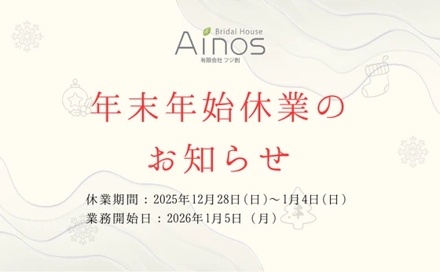
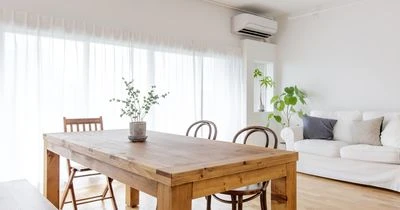
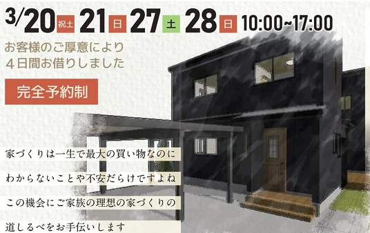
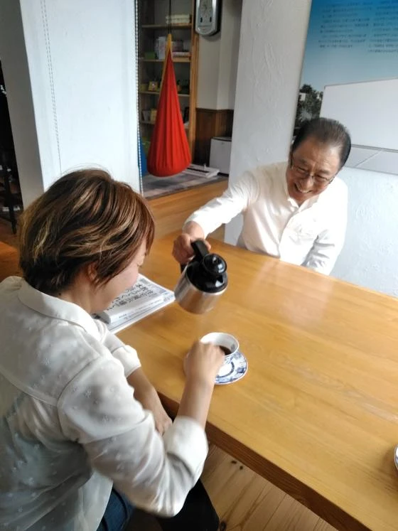
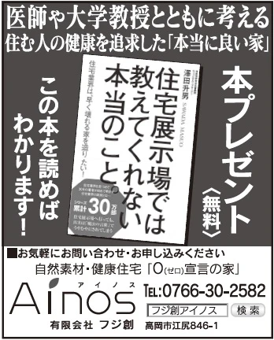
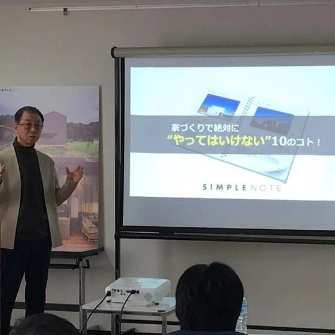
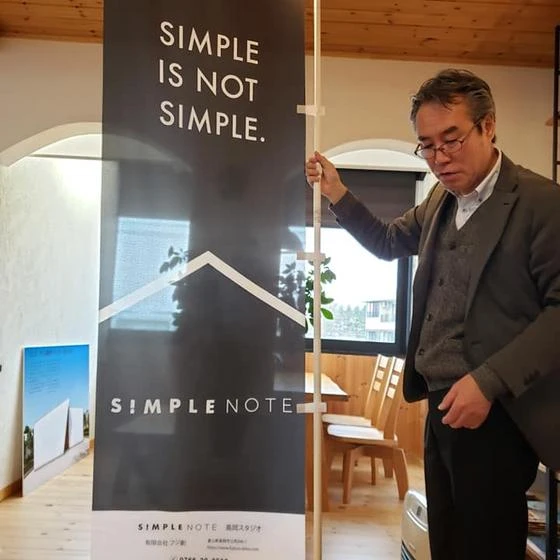
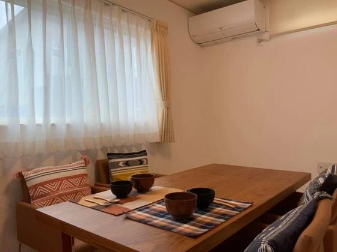
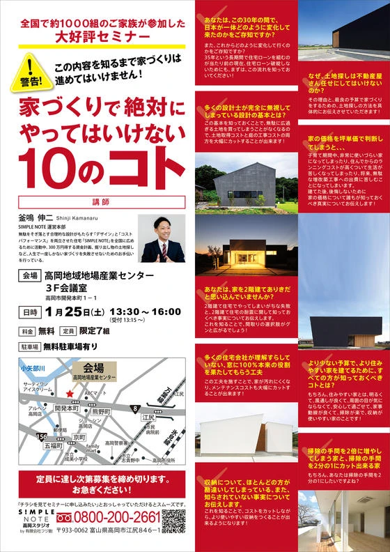

【年末年始休業のお知らせ】
いつもフジ創をご利用いただき、誠にありがとうございます。 誠に勝手ながら、下記の期間を年末年始の休業とさせていただきます。 ■ 休業期間 2025年12月28日（日）〜 2026年1月4日（日） ■ 営業再開日 2026
続きを読む →FUJISOU AINOS JOURNAL
家づくりのこと、暮らしのこと。
日々の想いを、お伝えします。
お知らせ 14件 ／ 新しい記事から 1・1ページ

いつもフジ創をご利用いただき、誠にありがとうございます。 誠に勝手ながら、下記の期間を年末年始の休業とさせていただきます。 ■ 休業期間 2025年12月28日（日）〜 2026年1月4日（日） ■ 営業再開日 2026
続きを読む →
こんにちは。富山で自然素材にこだわるホンモノの家、フジ創アイノスです。 今住んでいるお家が、夏になると「とにかく暑い！」とお悩みの方、これから中古住宅のリフォームをご検討中の方にお知らせです！ 特許工法Air断 で、中古
続きを読む →
こんにちは。富山で自然素材にこだわるホンモノの家、フジ創アイノスです。 家づくりは、一生で最大の買い物なのに、わからないことや不安だらけですよね。 「まずは何からはじめたら良い？」 「どのくらいの価格で家を建てられるの？
続きを読む →
こんにちは。富山で自然素材にこだわるホンモノの家、フジ創アイノスです。 3月27日（土）・28日（日）に小矢部市綾子で「完成見学会」＆「家づくり見学会」を行います。 "無垢材" をふんだんに使った「自然素材」の家です。
続きを読む →
こんにちは。富山で自然素材にこだわるホンモノの家、フジ創アイノスです。 毎週土曜日日曜日は、高岡市内免でオープンハウスを実施しています！ アイノスこだわりの自然素材としっくい壁でできた家です。 木のぬくもりや澄んだ空気感
続きを読む →
8月2日㈰高岡テクノドームにて、大好評セミナー『家づくりで絶対にやってはいけない10のコト』を開催いたします。 これまで全国で約1000組が参加した人気のセミナーです。 家は一生で一番高い買い物と言われますので、絶対に家
続きを読む →こんにちは。富山で自然素材にこだわるホンモノの家、フジ創アイノスです。 新型コロナウイルス流行の第2波が懸念されています。 フジ創アイノスでは、新型コロナウイルスの感染拡大の現状を考慮して、お客様の安全を最優先に考え、安
続きを読む →
こんにちは。富山で自然素材にこだわるホンモノの家、フジ創アイノスです。 フジ創アイノスのYouTubeチャンネルが出来ました！ 最新の動画では、代表取締役の荒井一がアイノスを作った理由について語っています。 皆様に伝えた
続きを読む →
こんにちは。富山で自然素材にこだわるホンモノの家、フジ創アイノスです。 高岡市江尻にあるフジ創アイノスのショールームでは、予約制の無料相談会を開催しています。 かわいいショールームで家づくりのお悩みを相談してみませんか？
続きを読む →
【家づくりの考えが変わる】本プレゼントキャンペーンのお知らせ いい家づくりの為には勉強が必要です。 作ってから後悔するというのだけは避けたい。 展示場を回って営業さんに聞く？それもいいかもしれません。 ですが 展示場を回
続きを読む →
こんにちは、富山で自然素材にこだわるホンモノの家。フジ創アイノスです。 先月２５日に開催した 「家づくりでは絶対にやってはいけない１０のコト」 好評につき、 SIMPLE NOTE さんと、 次回の予定 を決める会議が進
続きを読む →
こんにちは、富山で自然素材にこだわるホンモノの家。フジ創アイノスです。 １月２５日に開催予定 「家づくりでは絶対にやってはいけない１０のコト」 の準備がすすんでいます。 先日フジ創にのぼり旗が届き、組み立てました。協力業
続きを読む →
こんにちは、富山で自然素材にこだわるホンモノの家。フジ創アイノスです。 考えてみると、親戚って不思議な関係ですね。家族じゃないけど、他人ではない。 友人でもない。師弟関係でもない。ご近所さんでもない。 なのにとても親密で
続きを読む →
こんにちは、富山で自然素材にこだわるホンモノの家「フジ創アイノス」です。 今年は大変お世話になりました。来年も皆様に有益な情報や 住宅づくりに興味をもっていただけるような内容を投稿していきたいと思います。 １月に開催予定
続きを読む →